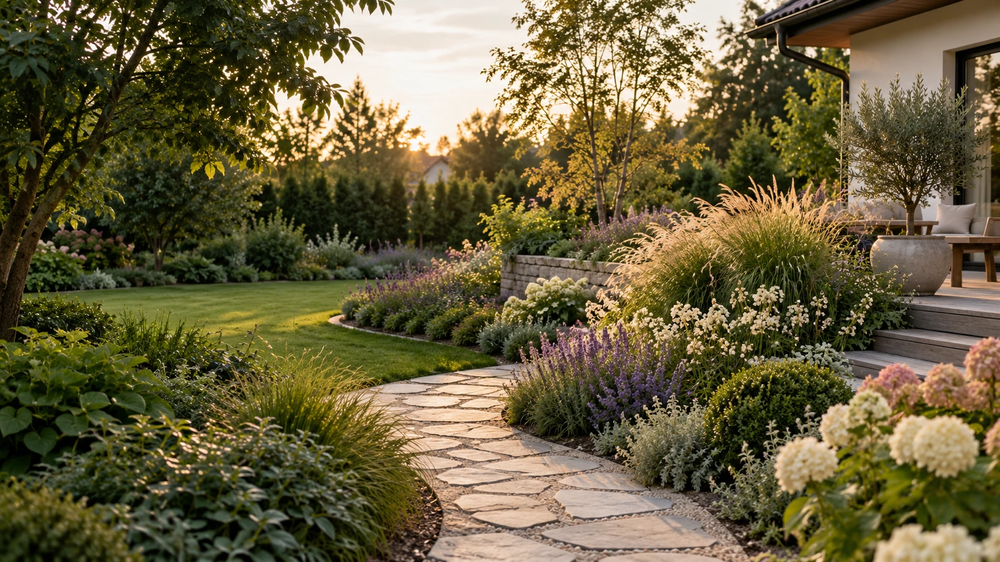

Potrzeby właścicieli
Miejsce na opis codzienności właścicieli i ich oczekiwań wobec ogrodu.

↳ EFFKOWE OGRODY / EWA KATRYCZ
Powierzchnia
Do uzupełnienia
Rodzaj materiałów
W przygotowaniu
Zakres
Do potwierdzenia
Roboczy opis projektu — własne wizualizacje i potwierdzone informacje zostaną uzupełnione.
Miejsce na opis codzienności właścicieli i ich oczekiwań wobec ogrodu.
Miejsce na potwierdzone informacje o warunkach i ograniczeniach przestrzeni.
Tu pojawi się opis układu, kompozycji i rozwiązań przyjętych w projekcie.
Miejsce na dokładny zakres opracowania przygotowanego dla tego ogrodu.
Galeria czeka na materiały do tego projektu.
Miejsce na zatwierdzony fragment rzutu 2D lub planu nasadzeń.
KONTAKT
Wyślij kilka zdań o miejscu, etapie inwestycji i zakresie, którego potrzebujesz. Na tej podstawie łatwiej zacząć konkretną rozmowę.